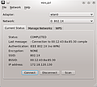

wpa gui
Dieser Artikel wurde für die folgenden Ubuntu-Versionen getestet:
Dieser Artikel ist mit keiner aktuell unterstützten Ubuntu-Version getestet! Bitte diesen Artikel testen und das getestet-Tag entsprechend anpassen.
Zum Verständnis dieses Artikels sind folgende Seiten hilfreich:
wpa_gui ist eine mit Qt realisierte grafische Oberfläche für wpa_supplicant. Es ermöglicht die Konfiguration von WLAN-Verbindungen ähnlich wie der NetworkManager und Wicd. wpa_gui wird zusammen mit wpa_supplicant entwickelt, wurde jedoch in Debian und Ubuntu in ein gesondertes Paket gepackt. Dies hat den Hintergrund, dass wpa_supplicant ebenfalls auf Access-Points/Routern (die den sog. "Access-Point-Client"-Modus anbieten) oder Servern verwendet wird, wo keine grafische Oberfläche verwendet wird.
Installation¶
Es muss lediglich folgendes Paket installiert[1] werden:
wpagui (universe)
 mit apturl
mit apturl
Paketliste zum Kopieren:
sudo apt-get install wpagui
sudo aptitude install wpagui
Anpassung /etc/network/interfaces¶
Hinweis:
In diesem Abschnitt wird als Bezeichnung des Interface wlan0 verwendet. Je nach verwendeter WLAN-Karte bzw. Treiber muss hierfür eine andere Bezeichnung eingesetzt werden. Siehe hierzu: Treiber
Zum Einsatz des Programms muss die Datei /etc/network/interfaces angepasst werden. Für nähere Informationen zu dieser Konfigurationsdatei gibt es einen eigenen Wiki-Artikel. Es muss ein Abschnitt für die zu verwendende Schnittstelle erstellt werden (erfordert Root-Rechte [3]). Dieser könnte etwa wie folgt aussehen:
# WLAN-Interface
iface wlan0 inet manual
wpa-driver wext
wpa-roam /etc/wpa_supplicant/wpa_supplicant.confDurch eine Einrichtung ohne die Zeile auto wlan0 wird die Netzwerkschnittstelle nicht beim Bootvorgang gestartet. Hierdurch ist es möglich, zunächst den NetworkManager zu verwenden. Möchte man dann wpa_gui verwenden, so deaktiviert man die Funknetzwerke im NetworkManager und startet die Schnittstelle in einer Konsole mit:
sudo ifup wlan0
Weiterhin sollte in dieser Datei für unterschiedliche Situationen jeweils ein Eintrag der Form:
iface default inet dhcp # Wenn ID-String=default, dann verwende DHCP
iface spezial inet static # Wenn ID-String=spezial, dann verwende die folgende statische Konfiguration
address 192.168.10.5 # Adresse
netmask 255.255.255.0 # Netzwerkmaske
hostname blade # Hostname
gateway 192.168.10.1 # Standard Gatewayerfolgen. Hierbei wird nach dem ID-String, der später den Netzwerken zugeordnet wird, die Konfiguration zwischen DHCP und statischer Konfiguration umgeschaltet. Natürlich müssen die Daten in der statischen Konfiguration an die eigenen Bedürfnisse angepasst werden.
Anpassung /etc/wpa_supplicant/wpa_supplicant.conf¶
Diese muss ggf. erstellt und mit folgendem Inhalt gefüllt [2] werden:
ctrl_interface=DIR=/var/run/wpa_supplicant GROUP=netdev update_config=1
Laut Manual zur wpa_supplicant.conf soll man GROUP=wheel verwenden. Diese ist jedoch weder auf Ubuntu noch auf Debian-Systemen vorhanden.
Weitere Einträge sind nicht notwendig, diese werden durch wpa_gui erstellt. Für weitere Informationen zur wpa_supplicant.conf kann der Wiki-Artikel WLAN/wpa supplicant herangezogen werden.
Gruppe: netdev¶
Beim Starten von wpa_gui wird man standardmäßig nach dem Systemverwalter-Kennwort gefragt. Dies lässt sich umgehen, indem man derselben Gruppe beitritt, die man in der wpa_supplicant.conf eingetragen hat.
Weitere Informationen zu Benutzern und Gruppen findet man in diesem Wiki-Artikel.
Verwendung¶
Verbindung zu üblichen WLANs¶
An dieser Stelle ist wpa_gui einsatzbereit. Es kann aus einer Konsole oder über das Startmenü gestartet werden. Dies sieht bei ansonsten leeren Konfigurationsdateien wie nebenstehend aus (Abbildung rechts).
Ein Klick auf den "Scan"-Button zeigt die Übersicht gefundener Funknetzwerke (siehe Abbildung links).
Durch einen Doppelklick auf eines der Netzwerke wird ein Konfigurationsdialog mit (meist sinnvollen) Voreinstellungen angezeigt (siehe Abbildung rechts).
Hinweis:
Achtung! wpa_gui kann auch nicht alle Einstellungen (z.B. äußere Identität), die die wpa_supplicant.conf beinhalten kann, konfigurieren. Eine manuelle Bearbeitung dieser Datei ist jedoch nicht ausgeschlossen.
Zusätzlich zu den Sicherheitseinstellungen kann man hier z.B. noch einen ID-String vergeben, der es erlaubt, für unterschiedliche Netzwerke DHCP oder statische IPs zu verwenden (siehe Abschnitt "Anpassung /etc/network/interfaces").
Durch einen Klick auf die Schaltfläche "Add" wird das Netzwerk in die wpa_supplicant.conf geschrieben.
Achtung!
Achtung, die Passwörter werden im Klartext abgespeichert. Jeder Benutzer eines Computers (mit ausreichenden Berechtigungen) kann diese durch Auslesen der Datei wpa_supplicant.conf in Erfahrung bringen.
 Nun kann in dem Auswahlmenü das Netzwerk ausgewählt werden und nach einem Klick auf die Schaltfläche "Connect" wird die Verbindung hergestellt.
WPS: WiFi Protected Setup¶
Weiterhin kann wpa_gui Verbindungen zu Netzwerken über Wi-Fi_Protected_Setup aufbauen. Hierbei gilt die Einschränkung auf die Verfahren "PIN-Eingabe" und "Push Button Configuration". Diese Einstellungen erreicht man über den Reiter "WPS" im Hauptfenster oder über "File/WiFi Protected Setup".
Fehlersuche in der WLAN-Konfiguration¶
Für eine einfache Fehlersuche (Debugging) kann man über "File -> Event history" das Ereignis-Protokoll öffnen.
Bei schwierigeren Fällen hilft folgendes Vorgehen:
Zunächst muss die Schnittstelle deaktiviert [3] werden. Dies geht über die Konsole mit dem Befehl:
sudo ifdown wlan0
, wobei wlan0 durch die korrekte Schnittstellen-Bezeichnung ersetzt werden muss. Danach muss die Datei /etc/network/interfaces bearbeitet werden [2] [3]. Hier muss der Abschnitt für die WLAN-Schnittstelle bearbeitet werden:
# WLAN-Interface
iface wlan0 inet manual
#wpa-driver wext
#wpa-roam /etc/wpa_supplicant/wpa_supplicant.confdie # bewirkt, dass der nachfolgende Text als Kommentar gewertet wird. Hierdurch wird wpa_supplicant nicht gestartet, wenn das Interface wieder aktiviert wird.
Nun aktiviert man das Interface wieder [3]. Dies geht über die Konsole mit dem Befehl:
sudo ifup wlan0
wobei wlan0 wieder durch die korrekte Schnittstellenbezeichnung ersetzt werden muss.
Nun kann wpa_supplicant in einer Konsole im Debug-Modus gestartet [3] werden:
sudo wpa_supplicant -i wlan0 -c /etc/wpa_supplicant/wpa_supplicant.conf -d -D wext
wobei wlan0 wieder durch die korrekte Schnittstellenbezeichnung und wext durch den korrekten Treiber ersetzt werden müssen. Sollte man eine andere Konfigurationsdatei als /etc/wpa_supplicant/wpa_supplicant.conf verwenden, so muss diese ebenfalls angepasst werden.
Sollten nun immer noch nicht ausreichend Debug-Informationen ausgegeben werden, so kann ebenfalls -d durch -dd ersetzt werden.
Hinweis:
Nachdem die Verbindung erfolgreich hergestellt wurde, sollten die Kommentarzeichen aus der /etc/network/interfaces wieder entfernt [3] werden.

 Übersichtsartikel
Übersichtsartikel- Erstellt mit Inyoka
-
 2004 – 2017 ubuntuusers.de • Einige Rechte vorbehalten
2004 – 2017 ubuntuusers.de • Einige Rechte vorbehalten
Lizenz • Kontakt • Datenschutz • Impressum • Serverstatus -
Serverhousing gespendet von